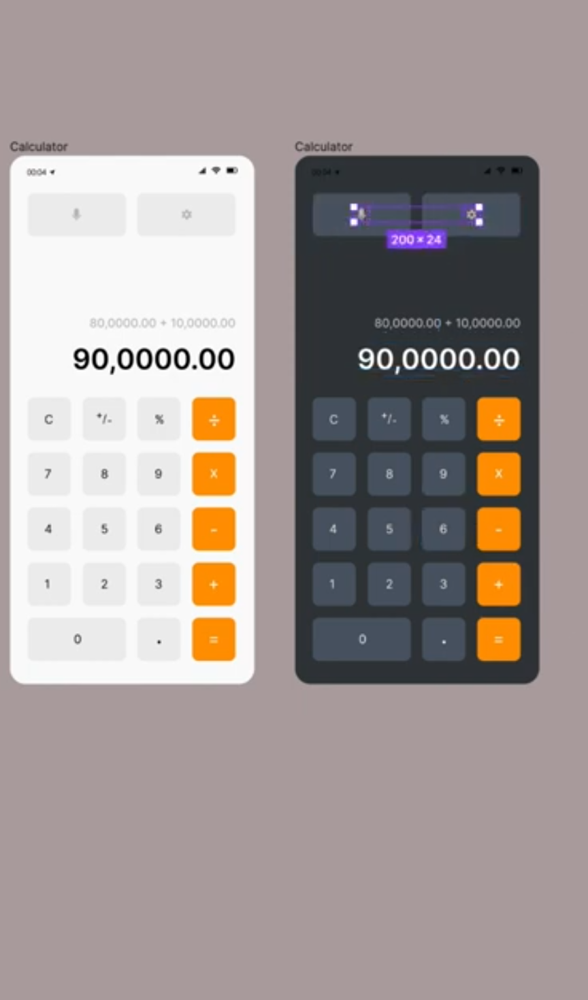

Layout
The calculator is centered on the screen with a simple, clean layout.
The calculator keypad is arranged in a standard 4x4 grid layout.
There is a display area at the top to show the input and results.
Color Scheme
The design uses a muted color scheme with grays, whites, and blues to create a modern,
minimalist aesthetic.
The number keys are a light gray, while the operation keys are a slightly darker gray.
The "equals" key is highlighted in blue to draw the user's attention.
Typography
The calculator uses a clear, readable sans-serif font for the number and operation labels.
The display area uses a larger font size to make the results easy to read.
Interactivity
The calculator keys are designed to provide visual feedback when pressed, either through a change in color or a slight shadow effect.
The display area updates in real-time as the user enters numbers and operations.